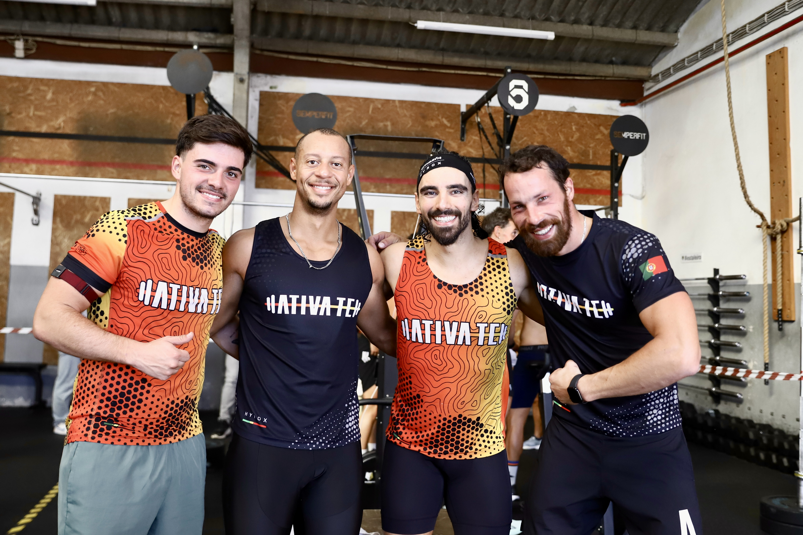
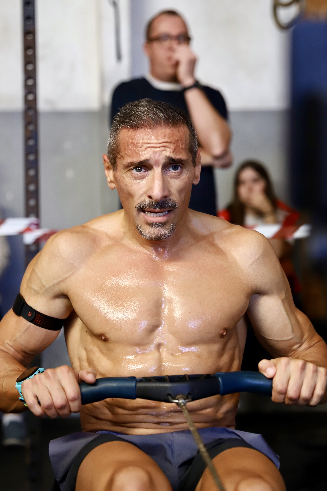

The Ergathlon do it Welness Club 2026 brought athletes to Santa Maria da Feira on 24 October for an indoor endurance event built around effort, concentration and a strong collective atmosphere.
Mateus Pereira's photographs place the athletes at the centre of the report. Faces under strain, smiles between efforts and a group gathered after competition show both the physical demand and the community around the event.
Effort shared inside the arena
The selected images move from individual intensity to the wider event environment. They document competitors working through the ergometer challenge and the support that continued around them throughout the day.


A close view of the competition
The coverage focuses on the human rhythm of the day rather than separating the competition from its setting. Each frame records the work demanded by the event and the encouragement visible around the athletes.
Image Media's coverage was produced by Mateus Pereira, with all three photographs in this report credited directly to him.
Image Media coverage
Reporting: IM News Editorial Desk
Coverage photographer: Mateus Pereira / Image Media
Event details verified against the supplied event record.